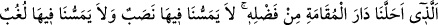

“Âhirette de hamd O’na mahsustur.” Bu ifâde dünyevi hamdin Allah’a mahsus
oluşunu beyan etmenin ardından, uhrevi hamdin de O’na mahsus olduğunu beyan
etmektedir. Burada neden dolayı hamd edildiğini bildiren bir şey zikretmeden hamdin
mutlak olarak ifâde edilmesi, bu hamdin bütün uhrevî nimetlere şâmil olması içindir. Şu
âyetlerde ise hamdedilen hususlar zikredilmiştir: “Bize verdiği sözde sâdık olan ve
bizi, dilediğimiz yerinde oturacağımız bu cennet yurduna vâris kılan Allah’a
hamdolsun.” (ez-Zümer, 39/74) ve “Lütfuyla bizi asıl oturulacak yurda (cennete)
yerleştiren (Allah’a hamd olsun)...” (Fâtır, 35/35). Yine dünyevî nimetlerden, uhrevî
nimetlere ulaşmaya vesîle olanlara da şâmil olması içindir. Nitekim Allah Teâlâ şöyle
buyurur: “Hidayetiyle bizi bu nimete kavuşturan Allah’a hamdolsun!” (el-A’râf,
7/43) Yâni karşılığı böyle cennet olan îman ve sâlih amele bizi hidâyet eden Allah’a
hamdolsun, demektir.
Denilir ki cennet ehli altı yerde Allah’a hamd ederler:
1- “Ayrılın bir tarafa bugün, ey günahkârlar.” (Yâsin, 36/59) diye nida edilip artık
müminler kâfirlerden ayrılınca, mü’minler:
“Bizi zâlimler topluluğundan kurtaran Allah’a hamdolsun.” (el-Mü’minûn,
23/28) derler. Nitekim Allah Teâlâ Nuh (a.s.)’ı kavminden kurtardığı zaman o böyle
demişti.
2- Sırâtı geçtikleri zaman:
“Bizden tasayı gideren Allah’a hamdolsun.” (Fâtır, 35/34) derler.
3- Cennet kapısına yaklaşıp hayat suyu ile yıkanıp cennete nazar ettikleri zaman:
“Hidayetiyle bizi bu nimete kavuşturan Allah’a hamdolsun.” (el-A’raf 7/43)
derler.
4- Mü’minler cennete girip melekler onları selamla karşılayınca:
“Lütfuyla bizi asıl oturulacak yurda (cennete) yerleştiren (Allah’a hamdolsun).
Artık orada bize ne bir yorgunluk dokunacak ne de orada bize bir usanç
gelecektir.” (Fâtır 35/35) derler.
5- Cennette makamlarına yerleştikleri zaman: